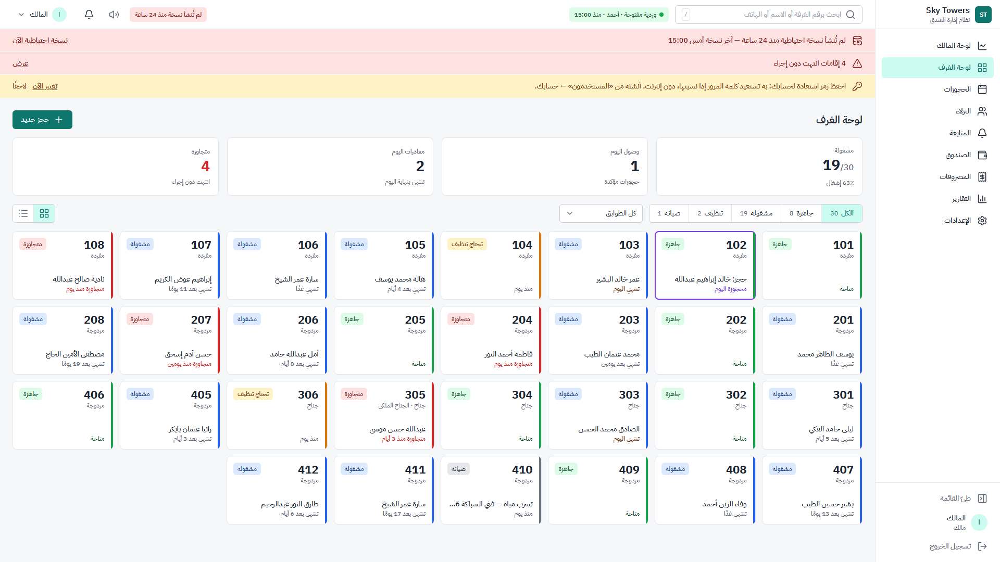
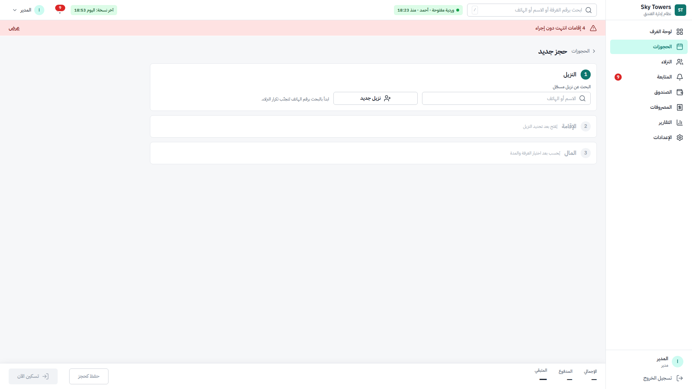
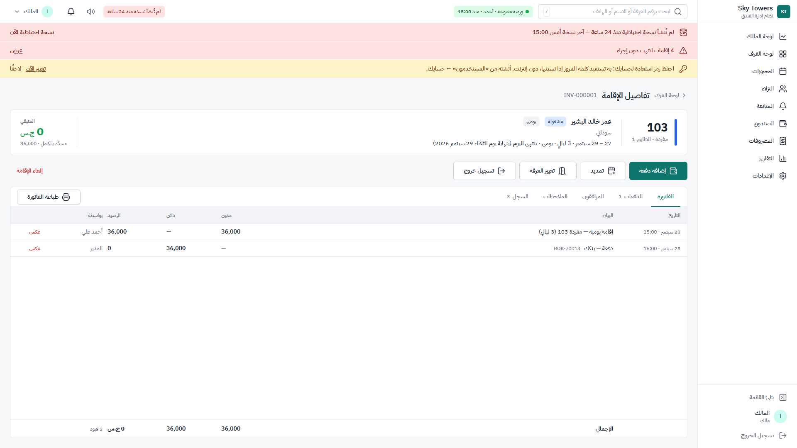
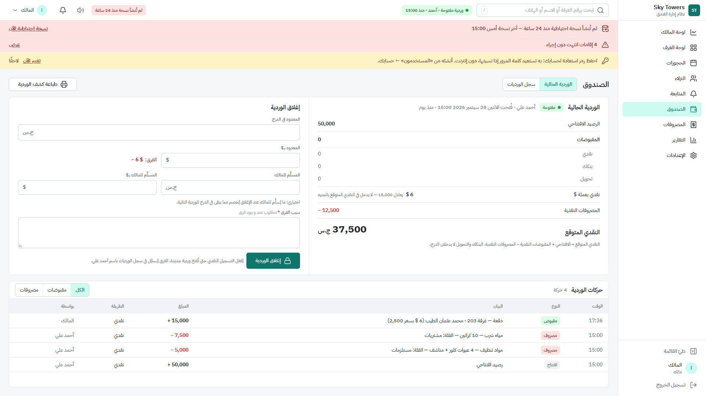
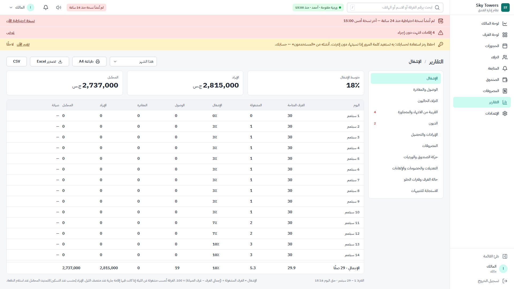
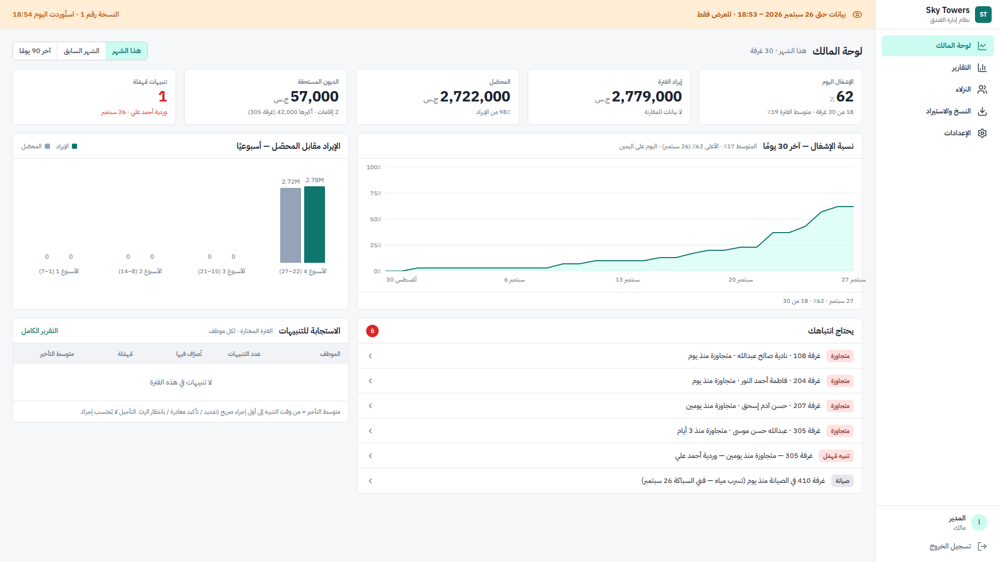
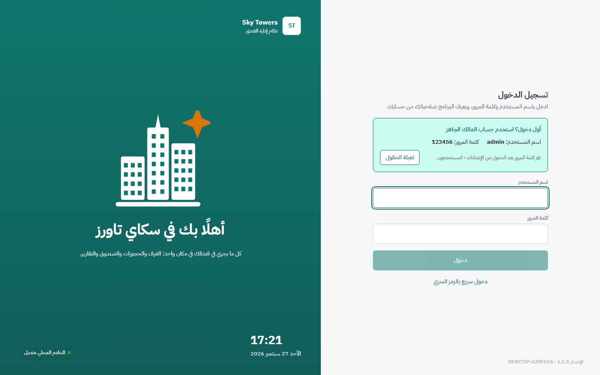

سكاي تاورز برنامج يُثبَّت على جهاز الاستقبال في الفندق، ويدير كل ما يحدث فيه: الغرف، الحجوزات، النزلاء، الدفعات، الصندوق، المصروفات، التنبيهات والتقارير. كل شاشاته بالعربية، ويعمل دون اتصال بالإنترنت، ويحفظ نسخة احتياطية مشفّرة من البيانات تلقائيًا.
كُتب لقارئين معًا: صاحب الفندق والموظفين الذين يريدون فهم ما يفعله النظام دون مصطلحات تقنية، والفني أو المطوّر الذي يثبّته أو يصونه. في كل فصل شرح عام أولًا، ثم مربع أزرق بعنوان «للتقنيين» لمن يريد التفاصيل (يمكن لغير التقني تخطّيه بأمان). الفصل الأخير تقني بالكامل.
فكّر في النظام كدفتر الفندق، لكنه دفتر لا يضيع، لا تُمزّق صفحاته، ويحسب وحده ويذكّرك بما يجب فعله.
خدمة ويندوز (SkyTowersServer) تشغّل خادم Django 5 + Django REST Framework عبر Waitress على
127.0.0.1:8471 فقط (لا يُعرض على الشبكة)، وقاعدة SQLite بوضع WAL في %ProgramData%\SkyTowers.
الواجهة تطبيق React أحادي الصفحة (RTL) يخدمه الخادم نفسه، داخل نافذة سطح مكتب مبنية بـ Tauri 2 (WebView2)، مع أيقونة في شريط المهام وإشعارات ويندوز.
دور الجهاز («استقبال» أو «مالك») في config.json؛ جهاز المالك يرفض كل كتابة عبر Middleware ويستقبل البيانات بدمج إضافي من النسخ.
كل غرفة بطاقة بلونها: جاهزة، مشغولة، تحتاج تنظيف، صيانة، أو متجاوزة (انتهت إقامتها ولم يُسجَّل خروج). تظهر على البطاقة اسم النزيل ومتى تنتهي إقامته. في الأعلى: عدد الغرف المشغولة ونسبة الإشغال، وصول اليوم، مغادرات اليوم، والمتجاوزة. الضغط على غرفة يفتح إقامتها أو يعرض إجراءاتها. البحث العلوي يجد الغرفة أو النزيل بالرقم أو الاسم أو الهاتف.

اختيار النزيل (أو إضافته)، نوع الغرفة والغرفة، والمدة: يومي أو أسبوعي أو شهري بأسعارها. السعر والإجمالي يُحسبان وحدهما.
كل الغرف على محور الأيام: ترى الفراغات وتحجز بالضغط على اليوم الفارغ مباشرة.
لا يسمح النظام بحجزين للغرفة نفسها في الليلة نفسها، ولا بتسكين غرفة في الصيانة.
بيانات الهوية والهاتف، سجل إقاماته السابقة، ديونه، وملاحظة تحذيرية تظهر للموظف عند التسكين.

لكل إقامة صفحة تجمع: الغرفة والنزيل والمدة، الفاتورة بكل بنودها ودفعاتها، المتبقي على النزيل، المرافقين، الملاحظات، وسجل ما حدث فيها. ومنها تُنفَّذ الإجراءات: إضافة دفعة، تمديد، تغيير الغرفة، تسجيل الخروج، أو إلغاء الإقامة، وطباعة الفاتورة.

فترات الإقامة بالتاريخ فقط بتوقيت الخرطوم (Africa/Khartoum) وتاريخ الخروج حصري؛ الطوابع الزمنية بـ UTC.
الفاتورة سجل إضافي فقط (FolioLine): التصحيح قيد عكسي جديد لا تعديل. تغيير الغرفة يقسم الإقامة إلى مقاطع (StaySegment)
حتى تبقى تقارير الإشغال صحيحة لكل ليلة. كل تعديل يرسل version، والنسخة القديمة تُرفض بـ HTTP 409 منعًا لتضارب موظفَين.
نقدًا أو بنكك أو تحويل، مع رقم المرجع لغير النقدي. إيصال حراري 80 مم يطبع المبلغ بالأرقام والحروف وفترة الإقامة.
للموظف خصم ضمن حدّ يضبطه المالك وبسبب مكتوب؛ ما فوق الحد يحتاج كلمة مرور المدير.
يفتح الموظف ورديته بمبلغ الدرج، ويغلقها بعدّ النقد. النظام يحسب المتوقع ويُظهر الفرق، والفرق يحتاج سببًا.
مصروف سريع في سطر واحد للمصروفات اليومية الصغيرة، ونموذج كامل بالفئة والإيصال للكبيرة. النقدي منها يُخصم من الدرج.
ما على كل نزيل يظهر في إقامته وملفه وتقرير الديون، ولا يُسجَّل خروج نزيل عليه دين إلا بموافقة المدير.
فاتورة A4 ببنودها ودفعاتها وخصمها، رقم تسلسلي لا يتكرر، وطباعة مباشرة من النافذة.

المبالغ أعداد صحيحة بالقروش (×100) في كل الطبقات (MoneyField)؛ لا float ولا Decimal في التخزين، والتنسيق عمل الواجهة.
المدفوعات والمصروفات والقيود إضافية فقط؛ الإلغاء قيد عكسي بسبب. كلمة مرور المدير للتجاوزات تُحسب محاولةً فاشلة عند الخطأ وتقفل بعد خمس.
قواعد تنبيه يضبطها المالك: إقامة تنتهي غدًا، إقامة متجاوزة، وردية مفتوحة طويلًا، غرفة في الصيانة منذ أيام، نسخة احتياطية تأخرت… يظهر التنبيه للموظف فورًا (وإشعارًا في ويندوز)، فيتصرف: تمديد، تأكيد المغادرة، بانتظار الرد، أو تأجيل. التنبيه الذي يُهمل تتجاوز مدته يصير «مُهمَلًا» ويُنسب إلى الوردية المسؤولة، ويراه المالك.
اثنا عشر تقريرًا، لكلٍّ فلاتر وفترة، وتُطبع على A4 أو تُصدَّر إلى Excel وCSV:
| التشغيل | المال | الرقابة |
|---|---|---|
| الإشغال · الوصول والمغادرة · النزلاء الحاليون · القريبة من الانتهاء والمتجاوزة · حالة الغرف وفترات الخلو | الإيرادات والتحصيل · الديون · المصروفات · حركة الصندوق والورديات | التعديلات والخصومات والإلغاءات · الاستجابة للتنبيهات · سجل التدقيق |

أول ما يراه المالك عند دخوله: الإشغال اليوم ومتوسط الفترة، إيراد الفترة ومقارنته بفترة سابقة بالطول نفسه، المحصّل، الديون المستحقة، التنبيهات المُهمَلة، منحنى الإشغال لآخر 30 يومًا، الإيراد مقابل المحصّل أسبوعيًا، قائمة «يحتاج انتباهك»، وجدول استجابة كل موظف للتنبيهات.

كل الحسابات في الخادم (reports/owner-dashboard)؛ الواجهة تعرض فقط. متوسط الإشغال = الليالي المشغولة ÷ (الغرف − غرف الصيانة) بالمعادلة نفسها لتقرير الإشغال،
والغرفة تُحسب مشغولة عن الليلة إذا كانت فيها إقامة جارية عند منتصف الليل. الإيراد يُحتسب عند التسكين والتمديد، والمحصّل عند استلام الدفعة.
هكذا يمشي يوم عادي، ومن يفعل كل خطوة، وما يفعله النظام وحده.
صفحة دخول واحدة للجميع. يكتب كل شخص اسم المستخدم وكلمة المرور، ويعرف النظام دوره من حسابه، فيفتح له ما يخصه. الموظفون يستطيعون الدخول السريع بالرمز السري (4 إلى 6 أرقام).
| العمل | المالك | المدير | موظف الاستقبال |
|---|---|---|---|
| لوحة الغرف، الحجز، التسكين، الدفعات، الخروج | ✓ | ✓ | ✓ |
| الوردية والمصروفات | ✓ | ✓ | ✓ |
| خصم فوق الحد، إلغاء إقامة، خروج بدين، نقل إلى غرفة أرخص | ✓ | ✓ | بكلمة مرور المدير |
| التقارير والطباعة والتصدير | ✓ | ✓ | ✓ (رقم الهوية مخفي) |
| الإعدادات: الغرف والأسعار وقواعد التنبيه | ✓ | ✓ | عرض فقط |
| إضافة المستخدمين وتعديل أسماء دخولهم وكلمات مرورهم | ✓ الجميع | ✓ عدا المالك | — |
| لوحة المالك | ✓ (صفحته الأولى) | ✓ | — |
البرنامج بعد التثبيت فيه حساب مالك جاهز: admin / 123456، تظهره صفحة الدخول حتى تُغيَّر كلمة المرور، ويذكّر البرنامج بتغييرها بعد الدخول دون أن يُلزم. ومن الإعدادات › المستخدمون يضيف المالك الموظفين والمديرين.
مصادقة بالرمز (Token) مع صلاحية للجلسة وقفل للشاشة عند الخمول. العمليات الحساسة تطلب رمز تأكيد (X-Confirm-Token) يصدر بإعادة إدخال كلمة المرور.
الصلاحيات في الخادم (IsManager لـ manager/owner، وقاعدة can_manage_user)، والواجهة تعكسها ولا تقررها.
خمس محاولات دخول خاطئة تقفل الحساب خمس دقائق، وتُسجَّل في التدقيق.
السجلات لا تُحذف؛ التصحيح قيد جديد، والإلغاء بسبب. ما حدث يبقى ظاهرًا.
كل عملية مرتبطة بما قبلها كسلسلة؛ أي عبث بالسجل يُكتشف عند الفحص والاستيراد.
إرجاع ساعة الجهاز للوراء (للتلاعب بالتواريخ) يوقف التسجيل حتى تُصحَّح الساعة.
النسخ الاحتياطية مشفّرة، لا تُقرأ دون مفتاح الفندق أو كلمة مرور المالك أو مدير.
الخادم يستمع على الجهاز نفسه فقط، فلا يصل إليه أحد من الشبكة.
مجلد البيانات يكتب فيه مسؤولو الجهاز والخدمة فقط.
رقم هوية النزيل يظهر مخفيًّا للموظف (آخر أرقامه فقط)، وكاملًا للمدير.
سلسلة التدقيق: AuditLog بتسلسل ومُلخّص يتضمن مُلخّص السجل السابق، ويُتحقق منها في كل استيراد. حارس الساعة:
ClockGuardMiddleware يرد HTTP 423 clock_rollback على أي كتابة إذا تأخرت الساعة عن آخر كتابة مسجّلة.
المنفذ: ربط حصري SO_EXCLUSIVEADDRUSE على 127.0.0.1:8471 حتى لا يشاركه برنامج آخر.
المفاتيح: مفتاح الفندق age (X25519) محفوظ بـ DPAPI على ويندوز.
التصدير: VACUUM INTO لنسخة متسقة من SQLite، والمرفقات (كاملة أسبوعيًا، وإلا المتغيّر فقط)، وmanifest.json بـ SHA-256 لكل ملف، ثم ZIP مشفّر بـ age.
صيغة الملف 2: سطر تعريف، ثم سطر JSON (معرّف الفندق، التسلسل، الوقت، وخانات المفتاح)، ثم الحمولة المشفّرة.
خانة المفتاح هي مفتاح الفندق مشفّرًا بوضع كلمة المرور في age (scrypt) بكلمة مرور كل مالك أو مدير نشط، وتُكتب عند إنشاء الحساب أو تغيير كلمة مروره أو أول دخول بكلمة المرور بعد التحديث.
الاستيراد (جهاز المالك): خمسة فحوص قبل الدمج: التوقيع، سلامة القاعدة، معرّف الفندق، الإصدار (هجرات غير معروفة)، وسلسلة التدقيق.
الدمج إضافي بترتيب الجداول: الصف الجديد يُضاف، والأحدث بـ updated_at يَغلب، وجداول الإضافة فقط لا تُعدَّل أبدًا.
الجهاز الجديد: POST backup/adopt يفحص الملف ويضعه في pending-import/ ثم ينهي العملية (رمز 3) لتعيد إجراءات الاسترداد في ويندوز تشغيل الخدمة؛
قبل فتح قاعدة البيانات تُنقل الملفات ويُضبط الدور، والتثبيت الفارغ يُحفظ في backups/pre-import-<stamp>/.

التحديث: تنزيل الملف نفسه وتشغيله فوق الإصدار القديم؛ تبقى كل البيانات ويأخذ البرنامج نسخة احتياطية قبل التحديث. المتطلبات: ويندوز 10 أو 11 (64 بت)، ولا يحتاج إنترنت.
| الطبقة | التقنية | ملاحظات |
|---|---|---|
| الخادم | Python 3.12 · Django 5 · Django REST Framework · drf-spectacular | منطق العمل كله هنا فقط |
| قاعدة البيانات | SQLite (WAL) | ORM فقط؛ التحويل إلى PostgreSQL تغيير إعداد واحد |
| التشغيل | Waitress · Windows Service (pywin32) · PyInstaller | خدمة تبدأ مع ويندوز وتُعاد عند التعطل |
| الواجهة | React 18 · Vite · TypeScript · Tailwind · TanStack Query · openapi-fetch | RTL، ألوان من الرموز فقط، نصوص من ar.json |
| سطح المكتب | Tauri 2 (WebView2) · NSIS | مثبّت عربي، WebView2 مضمّن دون إنترنت |
| التشفير | age (pyrage): X25519 + scrypt | مفتاح الفندق + خانات كلمات المرور |
| التكامل | Google Drive API v3 | اختياري لرفع النسخ وتنزيلها |
models، rules.py (دوال نقية بلا قاعدة بيانات، مغطاة 100% بالاختبارات)، services.py (حالة استخدام واحدة في معاملة واحدة تكتب قيد تدقيق)، serializers، views.BaseModel: مفتاح UUID، hotel_id، created_at/updated_at، version، created_by. جداول الإضافة فقط ترث AppendOnlyModel.{"code", "detail"}: رمز ثابت للبرامج ورسالة عربية للمستخدم؛ رسائل الخادم تطابق ar.json باختبار.api/openapi.yml الإصدار 1.3)، والتغييرات إضافية فقط، ويولَّد منه نوع TypeScript للواجهة.main يبني المثبّت وينشره إصدارًا على GitHub برابط ثابت لأحدث نسخة.| ما | أين |
|---|---|
| البرنامج | C:\Program Files\Sky Towers\ |
| قاعدة البيانات والمرفقات | %ProgramData%\SkyTowers\data\ |
| النسخ الاحتياطية | %ProgramData%\SkyTowers\backups\ |
| المفاتيح | %ProgramData%\SkyTowers\keys\ |
| سجل الخدمة | %ProgramData%\SkyTowers\logs\server.log |
| إعداد الجهاز | %ProgramData%\SkyTowers\config.json (الدور، معرّف الفندق) |
أوامر الصيانة (من موجّه أوامر بصلاحيات المسؤول، والخدمة متوقفة): skytowers-server.exe manage reset_data --yes لإفراغ جهاز بعد تجربة،
وmanage restore_full للاستعادة الكاملة يدويًا. الدليل التقني الكامل: docs/windows.md.
لا. البرنامج لا يحتاج إنترنت أصلًا، وقاعدة البيانات تحفظ كل عملية لحظة تأكيدها. عند عودة الجهاز تبدأ الخدمة وحدها.
ثبّت البرنامج على جهاز جديد، وافتح آخر نسخة احتياطية (من الفلاشة أو Drive) من مربع «جهاز جديد»، واختر «للعمل عليه». تعود البيانات كما كانت عند آخر نسخة.
لا يستطيع حذف أي عملية أو تعديلها بصمت: كل تصحيح يظهر كقيد جديد باسمه، والخصومات الكبيرة والإلغاءات تحتاج كلمة مرور المدير، وتغيير الساعة للوراء يوقف التسجيل، وتقرير «التعديلات والخصومات والإلغاءات» يعرض كل ذلك للمالك.
المالك أو المدير يعيّن كلمة مرور جديدة ورمزًا سريًا جديدًا لأي موظف من الإعدادات › المستخدمون. الحساب المقفول بعد خمس محاولات يُفتح بعد خمس دقائق أو بزر «فتح القفل».
لا. المالك يدخل بحسابه على جهاز الاستقبال ويرى لوحته. الجهاز الثاني اختياري لمن يريد المتابعة من البيت.
لأن ملف التثبيت غير موقَّع بشهادة تجارية مدفوعة. اضغط More info ثم Run anyway. يمكن إزالتها لاحقًا بشراء شهادة توقيع.
نعم. الإزالة لا تحذف مجلد البيانات عمدًا؛ إعادة التثبيت تجد كل شيء كما كان.